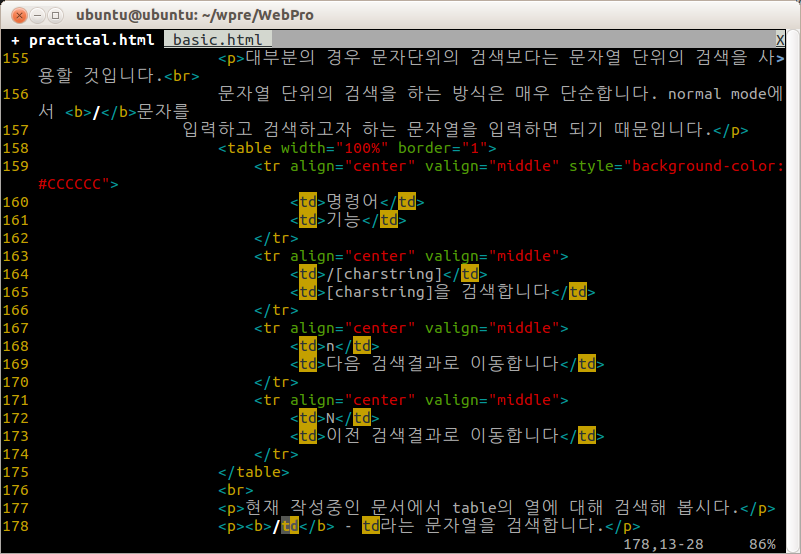

대부분의 텍스트 에디터가 그러하듯 vim에서도 기본적으로 왼쪽 정렬을 사용합니다.
가운데 정렬이나 오른쪽 정렬의 경우 아래와 같이 단순합니다.
| 명령어 | 기능 |
| :right | 오른쪽 정렬 |
| :center | 가운데 정렬 |
| :left | 좌측 정렬 |
정렬되는 기준은 커서의 위치이며 범위정렬을 하기 원한다면 visual mode를 사용하도록 하거나 아래의 예시와 같이 범위 수치를 입력하도록 합시다.
:10,50 center - 10라인부터 50번 라인까지 가운데 정렬
:1,$ right - 모든 라인 우측 정렬
우측정렬을 입력해 볼 경우 창의 우측 끝 부분을 기준으로 정렬하는 것이 아닌 일정한 범위를 기준으로 이를 정렬하는 것을 알 수 있을것입니다. 이러한 문자열의 너비를 확인하거나 수정하는것은 옵션으로, textwidth라는 명령어를 입력하면 됩니다.
:set tw=100 - 현재 문자열의 너비를 100으로 설정합니다(tw=textwidth)
혹 일정한 정렬에 있어 그 정렬에만 기준을 주려 한다면 명령어 이후 수치를 주면 됩니다.
:right 40 - textwidth=40(40칸)을 기준으로 우측정렬합니다.
vim에서 제공하는 문자열 검사의 경우 하나의 문자검사와 문자열 검사를 제공합니다.
문자 검색
| 명령어 | 기능 |
| f[c] | 커서가 위치한 행에서 문자 [c]를 앞에서 부터 검색합니다. |
| F[c] | 커서가 위치한 행에서 문자 [c]를 뒤에서 부터 검색합니다. |
| t[c] | 커서가 위치한 행에서 문자 [c]를 앞에서 부터 검색후 커서를 검색어 한 칸 앞에 위치시킵니다. |
| T[c] | 커서가 위치한 행에서 문자 [c]를 뒤에서 부터 검색후 커서를 검색어 한 칸 뒤에 위치시킵니다. |
| ; | 가장 최근에 검색한 문자를 다시 검색합니다. |
| , | 가장 최근에 검색한 문자를 역방향으로 검색합니다. |
만일 'b'라는 문자를 검색하고 싶을 경우를 간단한 예시로 들어보겠습니다.
fb - 커서가 위치한 행에서 b를 검색합니다.
; - 현재 행에서 b를 검색하였고 또 다른 b가 있을 시 커서가 다음번
b로 이동합니다.
, 이나 ;의 경우 이전 검색 명령어가 f 였는가 F였는가에 따라서 검색방향이 달라진다는 점을 주의합시다.
문자열 검색
대부분의 경우 문자단위의 검색보다는 문자열 단위의 검색을 사용할 것입니다.
문자열 단위의 검색을 하는 방식은 매우 단순합니다. normal mode에서 /문자를
입력하고 검색하고자 하는 문자열을 입력하면 되기 때문입니다.
| 명령어 | 기능 |
| /[charstring] | [charstring]을 검색합니다 |
| n | 다음 검색결과로 이동합니다 |
| N | 이전 검색결과로 이동합니다 |
현재 작성중인 문서에서 table의 열에 대해 검색해 봅시다.
/td - td라는 문자열을 검색합니다.
hls라는 옵션이 실행되어 있을 경우(:set hls) 아래 이미지에서 볼 수 있듯 td라는 명령어의 background color가 다른색으로 변화됨을 확인 할 수 있습니다. 이러한 문자의 검색결과는 n과 N으로 이동이 가능합니다.
|  |
| td라 검색한 문장의 배경색 변화 |
이외 정규표현식(Regular Expression)을 사용할 경우 좀 더 다양한 검색이 가능하나 그러기엔 기능이 많아지므로 이 부분에 대해서는 따로 언급하도록 하겠습니다.
한가지만 언급하고 지나가자면 특수문자(*, ^, % 등)의 경우 앞에 역슬러쉬(\)를 사용하고 원하는 문자를 입력하면 검색이 가능합니다.
/\"hello\" - "hello" 검색 예시
커서위치의 단어검색
따로 문자열 검색을 할 필요없이 현재 커서가 위치한 특정 단어를 검색하기 위해서는 *를 입력하면 됩니다.
단, 이는 공백을 포함하지 않는 단어단위로만 검색을 실행한다는 점을 주의합시다.
문자열 교체에 있어서 기본적인 예제를 하나 소개하겠습니다.
:1,$s/girl/boy/g
이문장은 girl이라는 문장을 모두 boy로 교환하라는 명령입니다. 이제 위의 문장을 분석해 봅시다.
:1,$라는 문장은 지금까지 봐 온 대로 범위를 지정하는 명령어 입니다. 위의 예제에서는 문장 전체를 뜻하고 있습니다.
s는 문장을 교체하라는 명령어 입니다.
/의 경우 명령들을 구분하기 위한 문자로 이는 다른 특수문자를 입력해도 문제가 없습니다.
범위/A/B/option 위의 구분자로 구분하게 되면 전반부(A)는 교체할 문자열, 후반부(B)는 교체 될 문자를 뜻합니다.
구분자의 마지막은 문장을 교체하는데 있어서의 옵션으로 이는 아래와 같습니다.
| 명령어 | 기능 |
| g | 범위 내에 검색된 모든 문자열(global)을 교체합니다 |
| i | 대소문자를 무시(ignore)합니다 |
| c | 문자열 교체 전 교체 여부를 확인(confirm)합니다 |
| e | 교체 과정에서 생기는 에러를 무시하며 이를 표현하지도 않습니다 |
이러한 교체 과정중 c를 입력할 시 아래와 같은 옵션들이 출력됩니다.
| 최 하단 교체 여부 확인 |
옵션에 대한 내용은 아래와 같습니다.
| 명령어 | 기능 |
| y | 교체 허용(yes) |
| n | 교체 거부(no) |
| a | 남은 모든(all) 교체 실행 |
| q | 교체 종료(quit) |
| l | 현재 행(line)만을 교체하고 교체 종료 |
| ^E | 아래로 한 행 스크롤 |
| ^Y | 위로 한 행 스크롤 |
이전 basic에서 배웠던 파일을 열거나 저장하는 방법에 대해서 기술했습니다.
이 페이지에서는 조금 더 확장된 내용을 기술합니다.
여러 파일 열기
a.txt에 있는 문자를 복사하여 b.txt에 붙여넣어야 한다면 우리는 visual mode나 command mode를 통해 a.txt의 내용을 복사할 것입니다. 이후 b.txt라는 내용을 불러오기 위해서 우리는 :e b.txt라는 명령어로 기존 a.txt라는 페이지에서 b.txt를 불러와 화면에 출력할 것입니다.
만일 a.txt에 복사할 내용이 여러 문장일 경우, 우리는 지속해서 :e a.txt나 b.txt를 호출해야 합니다. 하지만 이는 편집에 있어 번거로움이 존재하므로 vim에서는 이러한 '열린'페이지를 이동하는 명령어가 존재합니다. 혹은 한번에 여려 파일을 여는 방법 또한 있습니다.
vim a.txt b.txt c.txt - a,b,c 3개의 txt 파일을 실행시키고 맨 앞의 a.txt파일을 화면에 출력합니다.
그렇다면 이렇게 열린 페이지를 어떻게 이동하는지는 아래 테이블을 참조합니다.
| 명령어 | 기능 |
| Ctrl+6(^) | 이전 파일을 엽니다 |
| :[#]n | 여러 파일이 있을 시 다음 파일로 이동합니다 |
| :[#]N | 여러 파일이 있을 시 n과 반대방향으로 이동합니다. |
만일 페이지를 수정하였을 경우 이동이 불가능할 경우가 있습니다. 이 경우에는 파일을 저장한 이후 이동하던가 :n!와 같이 무시하는 문자(!)를 사용하여 페이지를 이동합시다.
이와 마찬가지로 :q 명령어로는 하나의 페이지만을 종료하는 명령어 이므로, 모든 페이지를 종료하기 위해서는 :qa 라는 명령어를 사용합시다.
파일 저장하기
기존에는 :w 명령어로만 파일을 저장하였을 것입니다. 이에 대해서 확장된 기능을 알아봅시다.
| 명령어 | 기능 |
| :sav [filename] | (saveas)현재 파일을 다른이름(filename)으로 저장합니다(편집중인 문서가 사본으로 변경됩니다) |
| :up | (update)변경 사항이 있을 경우에만 저장합니다 |
| :x(or ZZ) | vim을 종료하면서 변경사항이 있을 경우에만 저장합니다(=:wq) |
문서를 편집하다 보면 여러 파일을 열어두고 작업할 경우가 발생합니다.
이 경우 여러 터미널을 열어서 편집하는 방법도 있지만 하나의 화면을 분할하여 사용하는 방법을 vim에서는 제공합니다.
수평분할
명령어는 :sp로 이를 실행하면 아래와 같이 창이 분할됩니다.
| 수평분할 이미지 |
혹은 단축키로 Ctrl+w s(Ctrl+W입력 후 S)를 입력하여 분할할 수도 있습니다.
만일 분할함에 있어 다른 파일을 출력하고 싶다면 :sp [filename]을 사용하여 파일을 불러올 수 있습니다.
기본적으로 창의 크기는 현재 창의 크기의 절반을 차지하도록 분할되며, 새 창의 크기를 직접 지정하고 싶을 경우 :[#]sp와 같은 방식으로 #에 원하는 라인의 수치를 입력하면 됩니다.
수직분할
위에서 보았듯 수평분할이 가능하면 수직분할 역시 가능합니다.
명령어는 :vs 단축키는 Ctrl+w v로 다른 파일을 여는 방식이나 창의 크기를 정하는 방식은 수평분할과 동일합니다.
이러한 창 관련 단축키들은 Ctrl+w로 시작한다는 점을 참고 합시다.
| 수직분할 이미지 |
이외 창을 닫기 위해서는 :q 명령어를 입력합시다.
기본적으로 :q 명령어는 현재 창을 종료하는 명령어로 여러 창이 열려있을 경우 위 파일관리에서 확인한 :qa 명령어를 사용하면 모든창을 닫을 수 있습니다.
| 명령어 | 기능 |
| :[#]sp [filename] | ([#]Ctrl+w s) 상하로 창을 분할합니다. |
| :[#]vs [filename] | ([#]Ctrl+w v) 좌우로 창을 분할합니다.v |
| :[#]new | ([#]Ctrl+w n) 상하로 창을 분할하고 위쪽에 새로운 창을 생성합니다 |
| :[#]vnew | 좌우로 창을 분할하고 왼쪽에 새로운 창을 생성합니다 |
창 이동
수평분할과 수직분할을 사용할 경우 복합적으로 창을 분리할 수 있습니다. 이경우 창을 이동하는 방법 중 가장 단순한 방법은 Ctrl+w w로 창을 하나씩 이동하는 방식. 혹은 Ctrl+w (h,j,k,l)로 hjkl은 이전 보았던 방향키 대용으로 분할된 창에서 지정한 방향으로 창을 이동합니다.
창 크기 조절
이미 열려있는 창의 크기를 조절하는 방법은 Ctrl+w (+,-)로 이를 통해서 창의 크기를 조절할 수 있으며 =기호를 사용하면 모든 창이 균등한 크기를 지니게 됩니다.
| 명령어 | 기능 |
| Ctrl+w = | 모든 창의 크기를 균등하게 유지 |
| Ctrl+w [#]+ | [#]의 크기만큼 넓힙니다. 수치가 없을 경우 1만큼 증가 |
| Ctrl+w [#]- | [#]의 크기만큼 줄입니다. 수치가 없을 경우 1만큼 감소 |
위의 창 분할로 여러 파일을 하나의 화면에 출력하는 방법을 알 수 있습니다. 하지만 이 경우 화면 자체가 반으로 줄어들게 됩니다.
파일 관리 페이지에서 한번에 여러 파일을 여는 방법도 있습니다만 이 경우 어떠한 파일이 열려 있는지 시각적으로 확인하기가 힘듭니다. 이러한 이유로 사용되는 기능이 탭 분할입니다.
| 명령어 | 기능 |
| :tabe [filename] | (=:tabedit) 탭으로 filename을 엽니다. filename이 없을 경우 새 문서를 생성합니다. |
| :tabnew [filename] | 새로운 탭을 엽니다. |
| :tabc | (=:tabclose)탭을 닫습니다 |
| :[#]tabn | (=:tabnext or Ctrl+PageDown) 다음 탭으로 이동합니다. 이는 일반모드에서 gt와 동일한 기능으로 사용가능합니다 #에 숫자를 지정하면 탭 번호로 이동합니다 |
| :tabp | (=:tabprevious or Ctrl+PageUp) 이전 탭으로 이동합니다. 이는 일반모드에서 gT와 동일한 기능으로 작용합니다 #에 숫자를 지정하면 반복 수만큼 이동합니다 |
| :tabm [#] | (=:tabmove) #번째 탭으로 현재탭을 이동시킵니다. 이는 0부터 시작하며 #이 생략될 경우 최 우측으로 이동합니다 |
아래 이미지의 상단에 현재 현집중인 practical.html은 배경색이 검은색으로 다른 열린파일(ohter.html, basic.html, about.html)과 구분이 가능함을 알 수 있습니다.
| 상단 현재 열려있는 탭들과 편집중인 탭의 확인이 가능 |